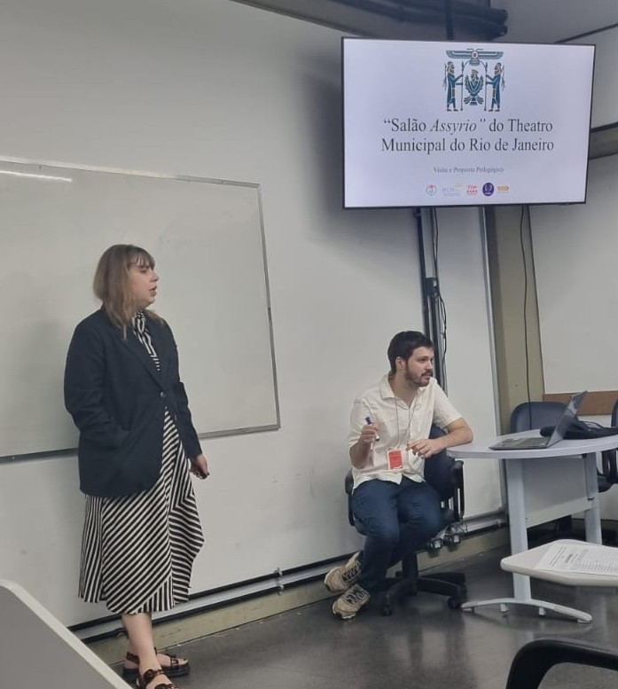
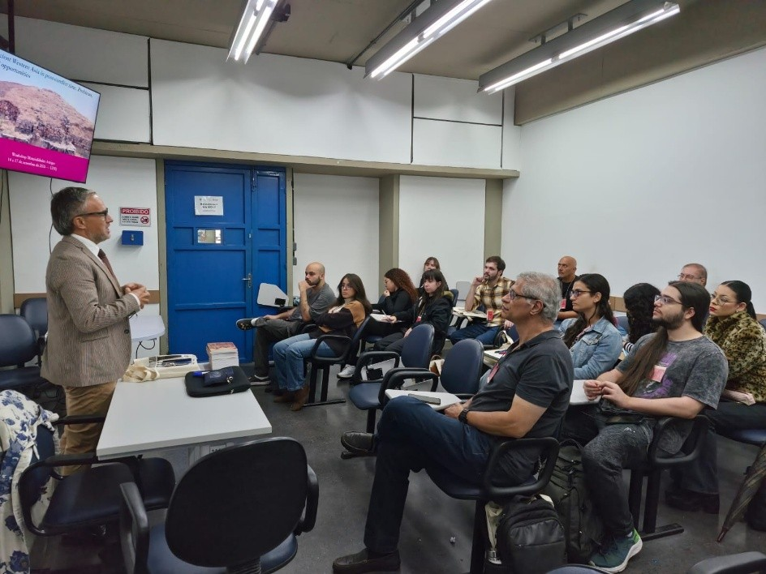
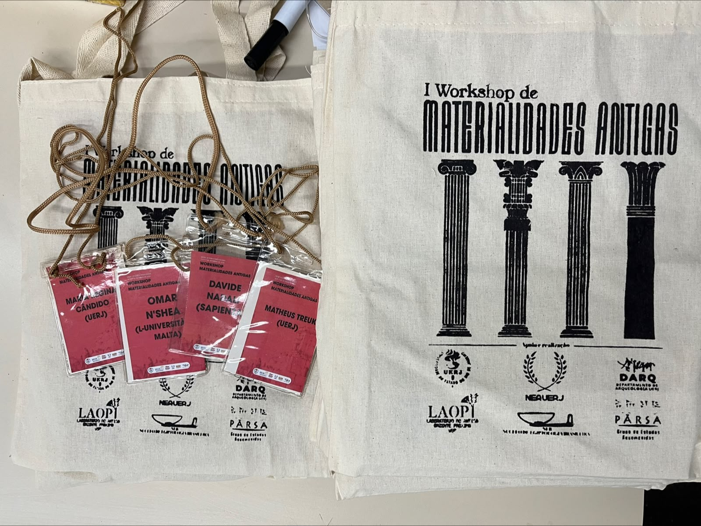
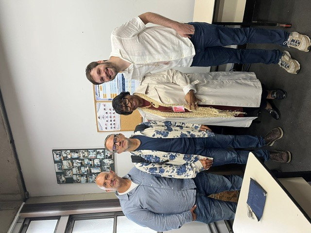
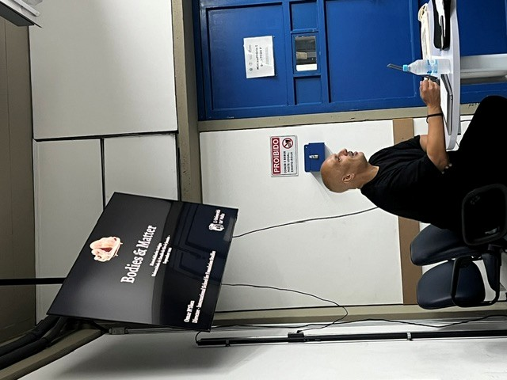
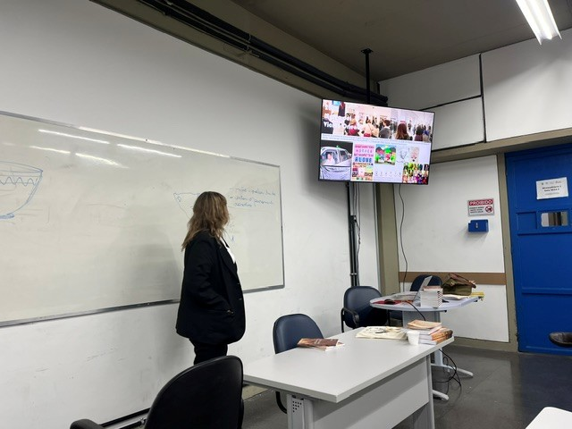
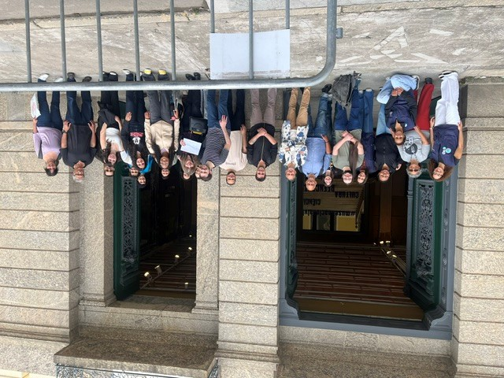
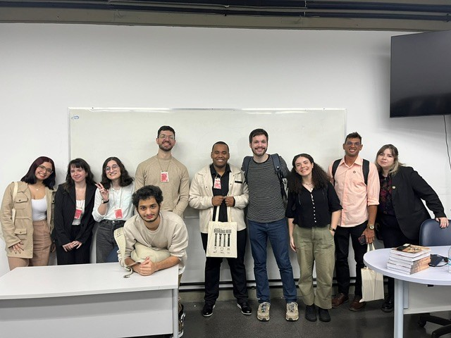

Em setembro de 2026, a Universidade do Estado do Rio de Janeiro sediou o I Workshop Materialidades Antigas: Entre História e Arqueologia, registrado sob o n.º 8466/2026 na Pró-Reitoria de Extensão e Cultura (PR3) da UERJ. O evento reuniu pesquisadores, docentes e estudantes em torno de diferentes abordagens da cultura material, promovendo o diálogo entre História Antiga, Arqueologia e áreas afins.
Organizado pelo Núcleo de Estudos da Antiguidade (NEA), em particular pela Professora Maria Regina Candido (DH/IFCH/UERJ) e pelo Professor Matheus Treuk (DARQ/IFCH/UERJ), o workshop ocorreu entre os dias 14 e 17 de setembro, na sala 9024-F da universidade. A programação incluiu conferências, apresentações de trabalhos acadêmicos e debates. Paralelamente, foi realizado o Minicurso de Extensão SIEXT 2709/2026, intitulado “Arte? Artefato? O método de Edmund Burke Feldman na comunicação da Arqueologia da Ásia Ocidental”, ministrado pela arte-educadora Kayssa Mavrides, mestra pela Sapienza Università di Roma. O minicurso teve atividades entre os dias 14 e 18 de setembro.
Na manhã de 14 de setembro, às 9h, Kayssa Mavrides ministrou a primeira aula do minicurso de extensão. A atividade apresentou aos participantes as quatro etapas da leitura crítica de imagens propostas por Edmund Burke Feldman: descrição, organização, análise e interpretação, e avaliação. Foram também explorados estudos de caso sobre a aplicação dessa metodologia à divulgação do conhecimento arqueológico.

No período da tarde, ocorreu a conferência de abertura, intitulada “Sonho de um Mundo Antes de Nós”, apresentada por Matheus Treuk, presidente da comissão organizadora. Em seguida, o professor convidado Davide Nadali, da Sapienza Università di Roma, proferiu a conferência “Digging in Ancient Western Asia in Post-Conflict Time. Problems, Challenges and Opportunities”.
Em sua apresentação, Nadali abordou o trabalho de sua equipe na preservação e restauração de sítios arqueológicos afetados pela Guerra Civil Síria, especialmente na região de Ebla (Tell Mardikh). A conferência destacou a importância da Arqueologia para a preservação da memória cultural e para a compreensão dos processos de construção e conservação de identidades em contextos de conflito. A atividade foi seguida por perguntas e discussões com os participantes.
Ao longo do dia, foram oferecidos coffee breaks aos participantes. Também foram distribuídos materiais de apoio e itens com a identidade visual do evento, incluindo ecobags, crachás, cadernos, uma pasta do NEA, canetas e blocos de anotações.


Na manhã de 15 de setembro, Kayssa Mavrides e Matheus Treuk deram continuidade ao minicurso, apresentando novos estudos de caso. Entre os temas abordados esteve uma proposta pedagógica voltada ao ensino de Arqueologia da Antiguidade e à recepção da cultura antiga, tomando como referência o Salão Assyrio do Theatro Municipal do Rio de Janeiro.
Às 14h, a Professora Maria Regina Candido, da UERJ, apresentou uma conferência sobre a materialidade do ódio, a partir dos katadesmoi: lâminas de maldição confeccionadas em chumbo e encontradas no cemitério do Kerameikos, em Atenas.
A apresentação discutiu as possibilidades de investigação das emoções por meio da cultura material, as interpretações eurocêntricas das práticas mágicas na Antiguidade Clássica e as estruturas sociais relacionadas ao uso dos katadesmoi. A análise articulou documentação histórica e arqueológica para refletir sobre as relações entre objetos, práticas sociais e crenças. A conferência foi seguida por perguntas e debates.

Na manhã de 16 de setembro, Kayssa Mavrides avaliou as apresentações dos participantes do minicurso, nas quais foi aplicado o método de Feldman. A atividade permitiu retomar os procedimentos de leitura crítica de imagens e suas possibilidades de utilização na comunicação do conhecimento arqueológico.
À tarde, a partir das 14h, o professor Omar N’Shea, da L’Università ta’ Malta, em Valletta, apresentou a conferência “Bodies and Matter: The Materiality of Death in Neolithic Malta”.
A apresentação abordou desdobramentos recentes das escavações na ilha de Gozo, em Malta, e examinou a história da categoria “vênus”, empregada para designar estatuetas femininas do Neolítico maltês. N’Shea também discutiu as relações entre os achados paleoantropológicos e as representações idealizadas do corpo na arte escultórica, explorando questões relacionadas à materialidade, à representação e à morte. A conferência foi seguida por perguntas e discussões.


Na manhã de 17 de setembro, Kayssa Mavrides, com o apoio da equipe do Museu Nacional do Rio de Janeiro (UFRJ), em particular da pedagoga Sheila Nicolas Villas Boas, visitou a exposição permanente da instituição, reestruturada após o incêndio de 2018. A atividade integrou a programação do minicurso e proporcionou reflexões sobre práticas pedagógicas em museus, expografia e formas de introdução à Arqueologia, à História Natural e à arte.

No período da tarde, entre 14h e 16h, foram realizadas oito comunicações acadêmicas, cada uma com duração de 15 minutos. Os trabalhos contemplaram diferentes abordagens e objetos de estudo relacionados à História Antiga, à Arqueologia e à cultura material.
Junio Cesar Rodrigues Lima (UERJ) abriu a sessão com “Quando as pedras falam: uma proposta metodológica para interpretação histórica da cultura material a partir de Cesareia Marítima”. Em seguida, Sofia Amélia Rego D'Andrea (UFJF) apresentou “A história sociocultural do mitreu de Vercovicium a partir dos altares ao Mitra”.
Na sequência, Thiago Moreira de Oliveira Marcelino (UFJF) apresentou “Eu sou Mesha, filho de Kamos, rei de Moab: uma análise sobre a revolta moabita a partir da Estela de Mesha e da Bíblia Hebraica”. Jerrison Patu de Melo Alves (UERJ) discutiu “A relação entre a Pérsia e Atenas nos séc. VI e V AEC: a partir da antropologia econômica de Karl Polanyi”, propondo uma interpretação das relações entre os dois contextos políticos a partir das contribuições da antropologia econômica.
A quinta comunicação, de Flavio Gomes Figueira Camacho (UERJ), intitulada “As Materialidades da Alimentação Medieval”, abordou o estudo da alimentação na Idade Média. Posteriormente, Maria Eduarda de Almeida Vaz (UFRJ) apresentou “Imortalidade em fragmentos: a agência apotropaica dos ‘tijolos mágicos’ egípcios”.
Matheus da Silva Carmo (UFJF) deu continuidade à sessão com “Os grafites de Khirbet Beit Lei e a materialidade do culto a YHWH”. Por fim, Amanda Müller Guadiz (Unicamp) encerrou as apresentações com “Animais da alteridade: representações de camelídeos em arte Aquemênida sob uma perspectiva ecocrítica”.

As comunicações mobilizaram fontes, metodologias e perspectivas teóricas variadas, incluindo inscrições, monumentos, objetos arqueológicos, representações artísticas e práticas alimentares. A diversidade dos trabalhos evidenciou as possibilidades de investigação da Antiguidade e de outros períodos históricos por meio da cultura material, considerada em suas relações com contextos sociais, políticos, econômicos e religiosos.
Após uma sessão de debates, foi realizado o encerramento formal do workshop, com agradecimentos aos participantes, conferencistas e comunicadores.
Em 18 de setembro, sexta-feira, foi realizada uma visita ao Museu de Arqueologia e Etnologia de Nova Iguaçu (MAE-NI), como atividade complementar do minicurso. A equipe educativa do museu apresentou a coleção arqueológica, que serviu de referência para os exercícios desenvolvidos ao longo da formação.
A programação incluiu também visitas a sítios arqueológicos locais, guiadas pelos arqueólogos responsáveis pelas escavações e pela preservação do patrimônio histórico e cultural de Nova Iguaçu. Durante as atividades, foram discutidas questões relacionadas às subalternidades, às técnicas de escavação e à Arqueologia colaborativa.
O workshop teve inscrições limitadas a 40 participantes presenciais. A participação variou ao longo da programação, com maior número de ouvintes, presenciais e remotos, na quinta-feira, 17 de setembro. As conferências e demais apresentações registraram públicos estimados entre 10 e 20 participantes presenciais e entre 10 e 20 participantes virtuais. Esses números correspondem às estimativas registradas para as atividades e não devem ser interpretados como uma contagem de participantes únicos ao longo de todo o evento.
O minicurso, realizado exclusivamente na modalidade presencial, contou com oito participantes que cumpriram a exigência de frequência mínima de 75%. Como resultado das atividades conduzidas por Kayssa Mavrides, foram produzidos cinco trabalhos nos quais os participantes aplicaram o método de Feldman a artefatos de sua escolha.
A programação também favoreceu o contato entre pesquisadores de diferentes instituições brasileiras e estrangeiras, a discussão de abordagens metodológicas e a aproximação entre pesquisa acadêmica, ensino e divulgação do conhecimento arqueológico. As atividades realizadas em museus e sítios arqueológicos ampliaram as possibilidades de reflexão sobre a cultura material e suas formas de interpretação e comunicação.
No dia 19 de setembro, sábado, o professor Davide Nadali juntou-se aos organizadores para assistir à ópera Il Campanello, de Donizetti, no Salão Assyrio do Theatro Municipal do Rio de Janeiro, cuja cortesia agradecemos. A ocasião também permitiu apresentar esse espaço aos pesquisadores convidados, contribuindo para divulgar sua relevância para os estudos de assiriologia.
O I Workshop Materialidades Antigas proporcionou um espaço de intercâmbio acadêmico dedicado à investigação da cultura material e às relações entre História e Arqueologia. A diversidade das conferências e comunicações, a realização do minicurso e as visitas a instituições museológicas e sítios arqueológicos contribuíram para aproximar pesquisadores, estudantes e profissionais de diferentes áreas.
A gratuidade de todas as atividades foi um aspecto importante da iniciativa. Os custos de transporte, coffee breaks, ecobags e materiais de apoio não foram repassados aos participantes, favorecendo o acesso às atividades acadêmicas. As discussões realizadas, os trabalhos produzidos no minicurso e as possibilidades de cooperação entre instituições constituem resultados relevantes desta primeira edição.
A organização agradece aos membros da comissão organizadora, aos conferencistas, aos comunicadores, aos professores convidados, às equipes das instituições parceiras e a todos os participantes que contribuíram para a realização do evento. Considerando a experiência desta edição, pretende-se propor uma nova edição do Workshop Materialidades Antigas nos próximos anos.
Organização
Núcleo de Estudos da Antiguidade (NEA/UERJ)
Universidade do Estado do Rio de Janeiro